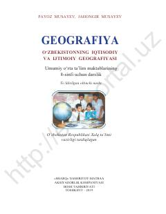

G88-sinf uchun O'zbekistonning iqtisodiy va ijtimoiy geografiyasi darsligi.
Ushbu darslik umumiy o'rta ta'lim maktablarining 8-sinfi uchun mo'ljallangan bo'lib, O'zbekistonning iqtisodiy va ijtimoiy geografiyasini o'rganadi. Kitobda mamlakatimiz iqtisodiyoti, aholi va tabiiy sharoit o'zaro aloqadorlikda yoritilib, hududiy tashkil etish tamoyillari tushuntiriladi.